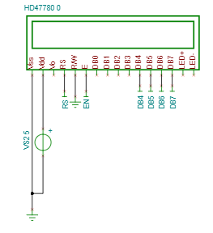

Using embedded C, I successfully managed to make a fully functioning calculator utilising the Arm Cortex-M4 core. The project consisted of learning the architecture of the Cortex-M4 based microcontroller (TM4C123GH) and applying these skills to design and configure an LCD and a keypad. Firstly, the individual components were designed (LCD and keypad) and connected to the microcontroller. Next, the microcontroller got the user input from the keypad and used the LCD to display it. Finally, the logic was designed to convert a mathematical string into a number to be displayed on the LCD. Doing this using C as challenging and required register-level control.

Challenges Faced
Using C - the C programming language is a very low-level language and leaves the user in charge of memory management. To avoid any issues, I simplified the project by breaking it down into smaller/easier steps. At each step, I tested the code on the microcontroller to ensure it worked as desired. If not, it meant only a small portion of code needed verification, thus reducing time for debugging.
Embedded C - some of the libraries that are used in traditional C programming were not available. Due to this, a work around as neccessary in some areas. For example, the function "atof()" did not output the correct value - instead of outputting a floating value (say 3.48), it only output the fractional value after the decimal place (0.48 in this case). To overcome this, I utilised the "atoi()" function along with the "atof()". The "atoi()" ouput an integer given an array of characters. Adding this value to the floating value acquired through "atof()" got me the expected result.
Time management - The project was significantly larger than the other projects I had done. To ensure the project as delivered on time, I made a plan outlining what I am to achieve by the end of each week. This ensured I finished the required tasks each week.
Distance learning - due to the Covid-19 pandemic, everyone was distance learning. Thus, I was not able to acquire the microcontroller needed for the project. Instead, I resorted to using the online simulation tool (TinaCloud) to simulate the microcontroller. Fr this, I had to learn how the simulation worked and the configurations needed to start the simulation. There were times when the servers were recieving too much load, meaning I was unable to get access. However, this was counte for in the planning stage (contingency time).